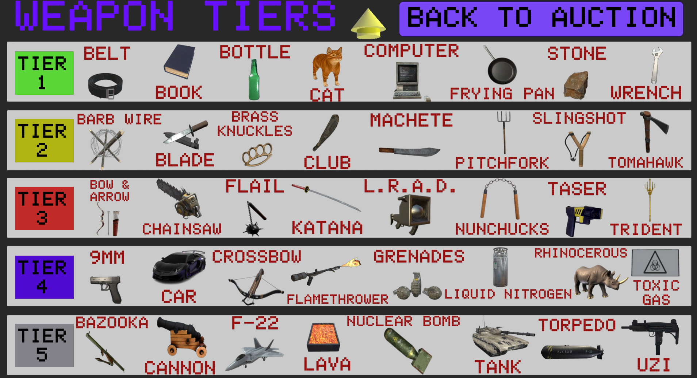
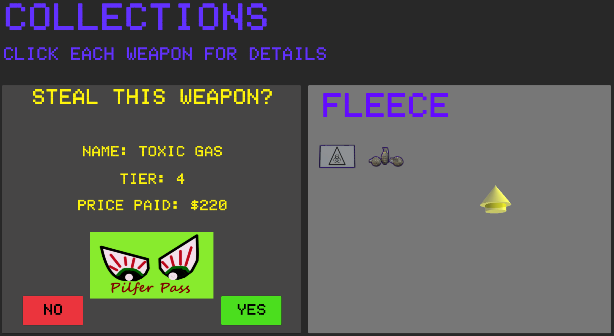
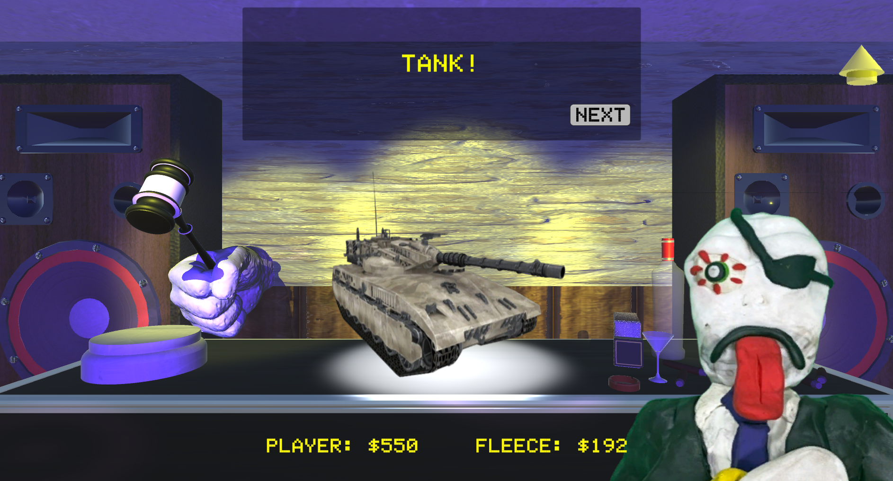

Unity • Strategy / Game of Chance
The Assassin Auction
Compete against the most feared hitman Fleece deFraud in a strategic auction where you bid for
weapons
of different tiers! Manage your money, take calculated risks, practice your shooting in bonus games,
and outsmart deFraud across an unpredictable series of bidding rounds.
Received an award for "Excellence in Design" at the Rutgers
Creation of Game Society's Spring 2025 Scarlet Showcase!

About the Project
Go head-to-head against Fleece deFraud, the assassin world's most devious, cutthroat, and most
importantly, obnoxious killer! You both will bid for a series of different types and tiers of weapons,
with the ultimate goal of being the bidder with the overall highest collection value of weapons.
However, beware that the game contains many factors out of your control: How high will Fleece bid? How
much should you bid on each item, which will be covered? Do you risk your purchase in a bonus game? Do
you trade in a weapon in hopes of replacing it with a stronger one? When will the auction end? Try your
luck with multiple unique playthroughs of deadly gambling in The Assassin Auction!
Content Notice: This game contains offensive language, loud noises and alcoholic
references!
Team: Dylan Abry (Lead Designer and Developer), Srushti Basapuri
(Artist)
Gameplay & Media
The Assassin Auction Overview
An overview video of "The Assassin Auction" and its gameplay!
"The Assassin Auction" Classic Mode Gameplay
Gameplay of The Assassin Auction that shows the turn-based bidding system and trade-in mechanic. The weapon collections and scores will update along with the transactions that take place throughout the game.
Target Table Mode Gameplay
This is a playthrough of the Speed bonus game. Players have only a couple seconds to shoot the Fleece deFraud card that appears while avoiding all the innocent people cards. Failure to shoot a Fleece deFraud card before it disappears results in a loss. Players can play these bonus games as many times as they want once the Target Table is unlocked.

Weapon Tiers Page
Players can win 25 different possible weapons in "Classic" mode and 40 different possible weapons in "deFraud's Deathtrap" mode.

Pilfer Pass Mechanic
The "Pilfer Pass" is first introduced in the "deFraud's Deathtrap" mode where players can choose a weapon to steal from Fleece deFraud's collection. This mechanic was changed in "The Alchemist Auction" to the game choosing a randomly selected potion instead of the player getting to choose the potion to steal.

Purchasing Items
I bought a tank!
deFraud Troll Intro
Every time the player opens the game, they are welcomed by Fleece deFraud, who will say one of 12 possible one-liners to the player.
What I Built
- Randomized Bid Probability System: Developed a probability-driven bidding system that determines how auction rounds progress and introduces uncertainty into the opponent's behavior. Bid decisions are influenced by changing thresholds and randomized outcomes, requiring the player to judge when continuing to bid is worth the financial risk rather than following a completely predictable bidding pattern.
- Dynamic Auction / Game-State System: Built the central system responsible for controlling the auction loop, including round progression, current bids, player and opponent turns, available funds, purchased weapons, and transitions between gameplay states. The system coordinates these values throughout each auction so that the results of one round correctly influence the state of subsequent rounds. The auction is programmed to have a randomly assigned integer value between 8 to 12 rounds every game so players are required to bid strategic while taking risks.
- Bonus Game Button System: Created an interactive bonus-game system in which buttons dynamically control gameplay events rather than functioning only as static UI elements. The bonus games in The Assassin Auction are all target shooting games, similar to the Police Academy arcade game. They are required to "shoot" the Fleece deFraud cards by clicking/shooting them while avoiding clicking on any innocent people cards that will result in a loss for the player.
- Weapon Inventory & Transaction System: Implemented a weapon collection system using C# data structures to track weapons acquired throughout the auction. Weapon information is updated as transactions occur and carried into other portions of the game, allowing purchased items to remain associated with the player and be referenced by later gameplay and presentation systems.
- Multi-mode Game State Management: Designed state-management logic to support three distinct game modes within the same project. Shared systems are reused where possible while mode-specific rules, objectives, and progression logic determine how the current session behaves, reducing the need to build completely separate gameplay flows for each mode.
- Persistent Progression & Target Table: Built a progression system that tracks accomplishments throughout the game. Once the player beats a game mode, they will receive access to a new game mode. Once both the "Classic" and "deFraud's Deathtrap" modes are complete, players unlock the "Target Table" where they obtain unlimited access to the three shooting bonus games!
- Strategic Opponent Decision-Making: Developed rule-based opponent logic that evaluates the current auction state before selecting an action. Rather than relying entirely on random behavior, the opponent considers relevant gameplay conditions such as available resources and the current bidding situation, combining deterministic rules with probability to create a less predictable competitor.
Technical Challenges
- Correctly Updating Scores Throughout Game: The score calculation algorithm
initially programmed in the game was for a loop to run through the player and deFraud's weapon
collections
once the auction was over and add up the tiers of each weapon. However, this method was not working, as
requesting
Unity to execute these calculations efficiently and load the correct win/lose screen turned out to be
unfeasible. Scores
were either getting miscalculated or not calculated at all, causing each game to go to Sudden Death when
they were not supposed
to!
The fix was to instead save the scores as two integer variables that would update for each transaction
that occurred throughout the game.
When an weapon was purchased, pilfered, or traded in, the scores would update accordingly, so by the end
of the auction, the scores just
had to be compared and the correct result to the game would follow. This bug taught me the importance of
performance in games and
involving it more in my gameplay coding decision process.
- Keeping Weapons Sorted in Inventory: In an effort to maintain organized weapon collections for the player and deFraud, I wanted the collection displays to contain no empty spaces if a weapon were to be traded in or pilfered. To accomplish this, I created two List structures that would hold the backend data of the weapon collections as they expanded/condensed throughout the game and two arrays that held the weapon objects and collection placers for the frontend. After each weapon reduction, the List would sort itself to dispose the lost weapon and I used loops to correctly match the remaining weapon objects to the correct display placer in the collection, ensuring any empty spaces were filled after each transaction.
- Weapons in Player Collection Appearing on Win Screen: The auction and win screen exist as separate gameplay states, but the final results screen needed to accurately represent the collection of weapons the player acquired during the auction. I needed to preserve the player's inventory through the transition using a static List and translate the underlying weapon data into the correct visual objects on the results screen. This required synchronizing gameplay data with presentation logic so that only weapons actually purchased by the player were displayed and each collection produced the correct final visualization.
- Sudden Death Tiebreaker State Management: A tied outcome required the normal end-of-game flow to be interrupted and redirected into a Sudden Death sequence rather than immediately declaring a winner. I implemented additional state logic to detect the tie condition, preserve the relevant results from the completed game, initialize the tiebreaker, and prevent the standard victory logic from executing prematurely. Once Sudden Death resolved the tie, its result could then return control to the normal end-game flow with a definitive winner. In Sudden Death, the player must win by beating a bonus game and its result will determine the overall outcome of the auction.